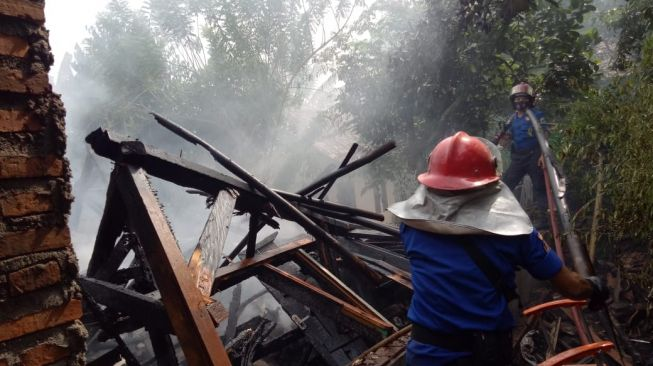

Sempat Hilang di Sungai
Sempat Hilang di SungaiWarga Lebak Ditemukan Tak Bernyawa Seorang warga Desa Sogong Kecamatan Panggarangan, Kabupaten Lebak bernama Iwan (67) yang sebelumnya hilang di Sungai Cisaat pada Selasa (10/11/2020) kemarin ditemukan... Selengkapnya |
|
Jumlah Pasien COVID-19 di Lebak Kini Bertambah Dua Orang Jumlah pasien COVID-19 di Kabupaten Lebak Provinsi Banten bertambah dua orang sehingga totalnya saat ini menjadi 314 orang... Selengkapnya |
| 
Pergi ke Warung Lupa Matikan Kompor,Rumah Ion Terbakar Habis Perasaan sedih tak bisa lagi diungkapkan Ion Masiah, pemilik salah satu dari dua rumah yang terbakar di Kampung Umbulan, Desa Mekaragung, Kecamatan Cibadak, Kabupaten Lebak... Selengkapnya |
Berita populer |
Potensi Gelombang Hingga 6 Meter, BPBD Banten Minta Nelayan Lebak Waspada |
Gedung Sekolah di Lebak Nyaris Terseret Longsor Akibat Hujan Kemarin |
Nilai Investasi Kabupaten Lebak Tembus Rp3,23 Triliun, 5 Besar Banten |